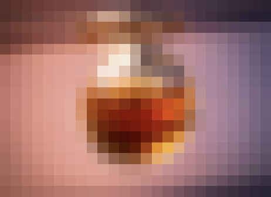
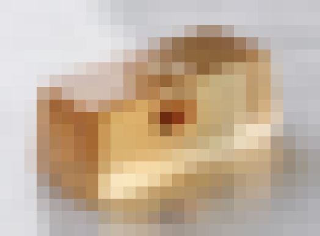
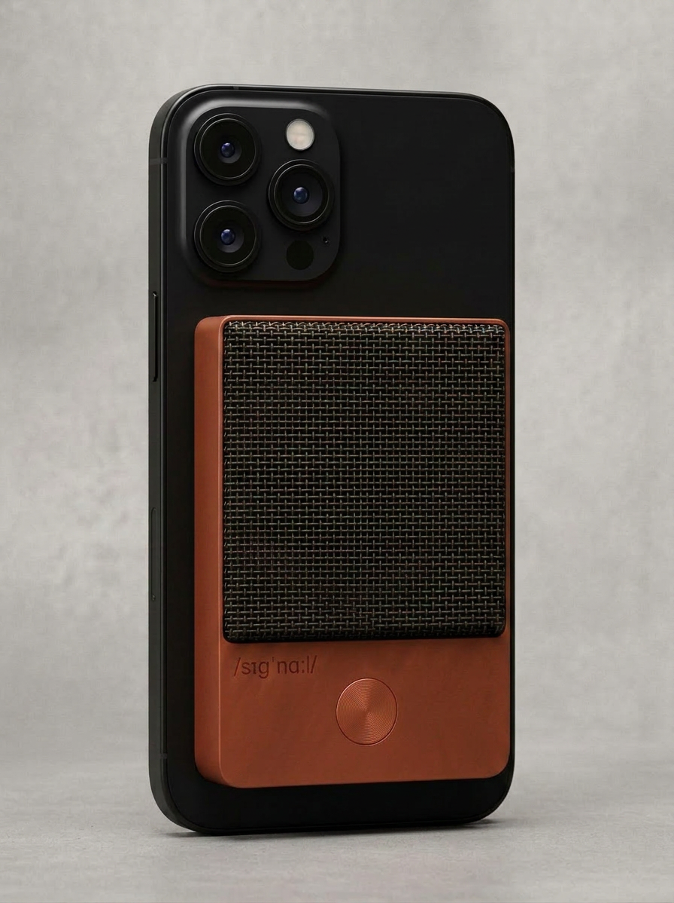
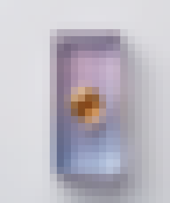

Wellness · Confidential Preview
/sɪgnɑːl/
Enter password to view.
send the right
the signal your cells are waiting for.
the daily foundation
Wellness · consumer preview
02 / 13
The Problem
most supplements are a chore you'll eventually stop taking.
Pills endured. Powders choked. Gummies regressed to candy. By day sixty, it's in the back of the cabinet. The category has a retention problem — and the buyer has run out of willpower.
~60%
of new supplement buyers stop taking it within 60 days. That's not a willpower problem. That's a product-design problem.
directional estimate · category retention data pending sourced confirmation
if you already take supplements daily — this is your key to unlocking their benefits.
03 / 13
The Category
you have a skincare ritual. why wouldn't you have one for your cells?
Skincare is the daily practice for the surface of you. Signal is the daily practice for the inside — the cells that run every system in your body. Same shape. Same rhythm. The part that's been missing from your shelf because no one built the format right.
Signal is as simple to shop as a multivitamin — universal, daily, obvious, no explanation required. And as elevated as skincare — a ritual you don't skip, a practice that becomes identity. The foundation that's been missing from your shelf.
what signal isn't
Not a longevity pill. Not a senolytic pulse. Not a fasting mimetic. Not anti-aging. Just daily upkeep — the thing you do every day so everything else on your shelf finally has what it needs to work.
the three things signal gets mistaken for.
not skincare
skincare goes on. signal goes in.
Skincare handles the topical layer — cleansers, serums, SPF, retinol. Signal is internal only. The practice your skincare routine has been waiting for a counterpart to.
not longevity
longevity sells the future.
Longevity sells anti-aging and a payoff thirty years from now. Signal sells daily upkeep — the practice you do today, every day, for the thing that runs everything.
not another supplement
supplements are the means.
Supplements are ingredients. Signal is the practice. The difference is the difference between “I take collagen” and “I do skincare.” One is a purchase. The other is an identity.
Wellness builds the foundation. signal is the chew that makes it daily.
04 / 13
The Answer
the daily foundation
that actually tastes good.
A packet a day. Two chews, ninety seconds each. The daily act of the practice — a pleasure that happens to carry clinical doses, not the other way around.

two chews · one packet · a daily dose
05 / 13
Why This Is Different
everyone else is a pill. a gummy. a powder.
The supplement shelf has settled on five delivery formats. Every one of them was designed around getting the supplement down — not around the daily act of taking it. That's why retention fails in 60 days and bottles end up in the back of the cabinet.
the pill
swallow. endure.
Capsule-shaped. Tasteless. The daily act is a chore. Nothing rewards consistency.
the gummy
candy in disguise.
Sugar-loaded. Clinical doses rarely fit. Regressed to dessert. You stop because you know.
the powder
mix. stir. tolerate.
Water, shaker, a moment. Friction compounds. Month two, behind the coffee.
the stick
rip. dump. chase.
Faster than powder, sharper than pill. Still a task. Still something you do to get over with.
the shot
crack. sip. hope.
Premium glass bottle. Front-loaded flavor. But it's a moment, not a ritual — and the price per dose adds up fast.
then there's signal.
the chew
tear. chew. taste. dissolve.
Two chews per packet. Ninety seconds each. Bright bite first, then a warm heart as mid notes release, then a lingering close as the chew dissolves. Clinical doses inside a Hi-Chew–adjacent soft chew engineered for staged flavor release. Not a gummy. Not a capsule. Not a powder. Not a stick. Not a filled chew. A format the category has never shipped — because nothing on the market was willing to be designed this far.

inside: staged flavor
06 / 13
What's In It
named. dosed. based in science, not bro science.
No proprietary blends. No "& other ingredients." Seven registered ingredient brands in one packet, plus a phospholipid complex — the brands each carry their own peer-reviewed evidence at the dose we use. Split across two functionally distinct chews: one gives your cells the raw materials; one activates and protects the machinery those materials run through. The fine print is the whole print.
the substrate chew — the raw materials
The cofactors your cells use to produce ATP and run the renewal pathways. What the cellular machinery actually burns.
phospholipid complex
substrate · dose at formulation
The membrane building blocks your cells rebuild with. Astaxanthin and ubiquinol in the keystone chew protect the cell and mitochondrial membranes; the phospholipid complex supplies the material to rebuild them. Generic descriptor — specific source and dose set at formulation.
BioPQQ®
substrate · 20 mg
Sourced as BioPQQ® from Mitsubishi Gas Chemical (Japan) — a registered ingredient brand. The PQQ used in the human studies on mitochondrial biogenesis (the cellular process of building new mitochondria). Low dose, high-specificity cofactor.
Puremidine™
substrate · 3.3 mg
Sourced as Puremidine™ from NNB Nutrition — a registered ingredient brand, ≥98% high-purity spermidine (non-wheat, vegan). The branded form used in human studies on cellular autophagy — the maintenance process cells use to recycle damaged components.
gingerol
substrate · 10 mg
From ginger root. Delivers the warm heart you feel mid-chew as the matrix releases its mid notes. Trace metabolic signaling plus the sensory signature the ritual is built around.
the keystone chew — what the machinery needs to function
Four keystones — one ionic activator plus three mitochondrial protectors, each its own registered ingredient brand, each its own RCT pedigree — plus sensory-dose cofactors that shape the post-chew body-feel.
Albion TRAACS® magnesium bisglycinate
keystone · ~1.5 g (∼200 mg elemental Mg)
Sourced as Albion TRAACS® from Balchem — a registered ingredient brand. The patent-protected chelate form of magnesium (not buffered). Magnesium is the ionic activator your ATP needs to function — without it, ATP is inert. Cofactor for 600+ enzymes including the mitochondrial dehydrogenases and creatine kinase.
AstaZine® astaxanthin
keystone · 4 mg
Sourced as AstaZine® from Algae Health Sciences — a registered ingredient brand, the first astaxanthin to carry Ecocert® organic certification, grown in closed-glass photobioreactors. One of the most-studied protectors of mitochondrial membranes.
Kaneka QH® ubiquinol
keystone · 100 mg
Sourced as Kaneka QH® from Kaneka (Japan) — a registered ingredient brand, first-to-market ubiquinol form, the bio-identical reduced form of CoQ10. Core component of the mitochondrial electron transport chain.
MitoPrime™ ergothioneine
keystone · 10 mg
Sourced as MitoPrime™ from Nutrition 21 — a registered ingredient brand. Ergothioneine is a sulfur-containing amino acid your body can't make; it concentrates inside mitochondria where oxidative load is highest.
Suntheanine® L-theanine
cofactor · 100–150 mg
Sourced as Suntheanine® from Taiyo International — a registered ingredient brand, the specific L-isomer of theanine used in clinical research. Shapes the calm-alertness quality of the post-chew body-feel.
N-Acetyl L-Tyrosine (NALT)
cofactor · 200–300 mg
USP-grade N-acetyl L-tyrosine. A tyrosine precursor your body uses in the catecholamine-synthesis pathway. Sensory-dose contribution to the post-chew body-feel architecture.
L-citrulline
cofactor · 300 mg
Pharma-grade amino acid. Your body converts it to L-arginine which supports the nitric-oxide pathway underlying vascular function. Trace sensory-dose contribution to the post-chew body-feel architecture.
07 / 13
The Lightbulb
you weren't missing ingredients. you were missing the signal.
Your shelf is already full. Collagen. Electrolytes. A beauty gummy. A greens. Raw materials everywhere. The problem was never what you were putting in. It's that your cells never got the signal to use it.
01 · your shelf
is full.
You've already invested in the ingredients. The ingredients aren't the problem.
02 · your cells
are the bottleneck.
Your cells need energy to actually use the raw material you give them. Without it, you're feeding a machine that can't run.
03 · signal
is the missing input.
A daily packet — two chews, substrate and keystone — that supplies the cofactors your cells need to produce ATP and protects the machinery that makes it. Every other supplement on your shelf finally has a purpose.
“a living cell requires energy not only for all its functions, but also for the maintenance of its structure. without energy life would be extinguished instantaneously, and the cellular fabric would collapse.”
— Albert Szent-Györgyi · Nobel Lecture, December 11, 1937
you take one serving a day. not because you feel it working. because you understand why it does.
08 / 13
The Ritual
tear. chew. taste. dissolve.
We didn't make a supplement that's palatable. We made a candy-like supplement that carries the actives. Resistant chew at first bite, progressive soft dissolve, warm heart of mid notes (10–30 sec) as mid notes release, lingering close as base notes carry through — two chews per packet, a ~3-minute ritual with a staged flavor arc. Designed around the bite, not the swallow.
Two chews per packet. A packet a day.
the packet — front & back
two chews. one packet.
Matte front, clear back, laser-scored tear. One substrate chew, one keystone chew — both visible before you open it. The packet is the daily dose; the architecture is readable at a glance.

the chew
ninety seconds each.
Progressive dissolve. Hi-Chew–adjacent matrix. Staged flavor arc — cool top notes, warm mid-chew bloom, lingering base notes. Two chews in sequence = ~3 minutes total. 2.7 × 1.5 × 1 cm per chew.

the container
one month at a time.
Thirty packets per box. Recyclable paperboard. Foil-stamped wordmark. A monthly cadence that matches how you think about habits.
the two-tier transitional flavor profile.
Two feelable moments during the chew, plus one sustained body-feel after. The whole daily experience is engineered — bright bite, warm heart, lingering close, and a grounded-clarity body-feel in the hour that follows.
Phase 1 · 0–5 sec
the bright bite
An immediate, bright, awakening hit. High-volatility, water-soluble top notes flash off as saliva contacts the Hi-Chew–adjacent matrix. Subthreshold cool chemesthetic front layered in.
Phase 2 · 10–30 sec
the warm heart
The heart of the flavor. Medium-volatility mid notes release as matrix dissolution exposes more surface area — gingerol and cinnamaldehyde drive the warm heart at the chew's center.
Phase 3 · 30–60 sec
the lingering close
A satisfying, lingering close. Low-volatility, lipid-soluble base notes carry through as the matrix gives up its fat phase last. Subthreshold warm chemesthetic close.
post-chew body-feel · 20–60 min
grounded clarity
In the 20–60 minutes after you chew, consumers report a sense of grounded clarity — a warm, settled quality that reads differently than caffeine. No ramp, no crash, no jitter. Not part of the in-chew arc — the daily body-feel that proves something's happening.
honest about both
The chew is instant — you feel the two-tier transitional flavor profile from day one. That's the ritual, and the ritual is real. The biology is patient: substrate-level cellular effects accumulate over the 30–90 day window, the same as any clinically studied oral ingredient. Most supplements conflate the two. We don't.
the full daily practice.
The daily practice has four touchpoints — same shape as a skincare routine, same rhythm as a habit that sticks. signal N°001 — the foundation, the daily core act — ships Q4 2026; signal N°002, the daily fuel layer, arrives 2027.
Q4 2026
N°001
the foundation
Two chews. One substrate, one keystone. The two-tier transitional flavor profile. The multi-system daily core act everything else stacks onto. Launching Q4 2026.
2027
N°002
the daily fuel
A daily chew. Two pearl chews per packet — the ATP-machinery layer: NNB Pürest Creatine™ + Albion TRAACS® Mg + BetaPower® Betaine + Bioenergy Ribose® + active-form methylated B-complex. 30 packets per carton — one month at a time. Arriving 2027.
EVENING · N°003
the evening practice chew
signal N°003. The overnight maintenance window — mitophagy, glycine signaling, taurine cushioning, apigenin tuning, plus Magtein® Mg L-threonate to settle the cell. On your time. (arriving 2028, after the daily fuel)
WEEKLY + MONTHLY
check the arc
Sunday check-in — photo, HRV, three lines of journal. Monthly review — the 30-day arc, the subjective feel. The ritual that becomes the record.
the chew is the receipt. your cells do the rest.
09 / 13
The Platform
one foundation. a roadmap.
signal is the daily foundation, not another supplement. The practice starts with signal N°001 — the foundation dual-chew packet (Q4 2026) — adds signal N°002, the daily fuel layer (2027), and completes with signal N°003, the evening practice chew (2028). Stack the three SKUs and you cover the full daily picture without overlap. Future products extend the practice along rhythm, cadence, and format — never into outcome categories. We will never make signal Hair. Never signal Sleep. Never signal Focus. Those already exist; they're the supplements the foundation supports.
the organizing principle
every signal product extends the daily practice.
signal N°001 — the foundation dual-chew packet (one substrate chew + one keystone chew, the multi-system daily core) — launches Q4 2026. signal N°002 — the daily fuel (two pearl chews per packet: creatine + Mg + betaine + ribose + methylated B-complex; the ATP-machinery layer underneath the foundation) — arrives 2027. signal N°003 — the evening practice chew (Mitopure® Urolithin A + Magtein® Mg L-threonate + glycine + taurine + apigenin) — completes the practice in 2028. Every signal SKU carries magnesium — in the form that fits the layer. The foundation is fixed. The context changes.
the roadmap.
Launch

signal N°001 · Q4 2026
the foundation
The foundation dual-chew packet. Two chews, one substrate, one keystone. The multi-system daily core act.
Stack-on

signal N°002 · 2027
the daily fuel
The ATP-machinery layer underneath the foundation. Two pearl chews per packet: creatine + Mg + betaine + ribose + methylated B-complex.
Evening

signal N°003 · 2028
evening practice chew
The overnight maintenance window. Mitopure® Urolithin A + Magtein® L-threonate + glycine + taurine + apigenin. Five branded actives, one cellular-recycling story.

+ accessory · limited edition
the travel container.
A universal MagSafe carry pod with a tactile push button to open. Holds one SKU's monthly supply — signal, or whatever else stacks alongside it. Not a SKU; a separate, limited-edition drop.
Future SKUs (rhythm variants and adjacent ingestible formats) will be announced as they're locked. Every future product passes the two-question test below.
Every signal SKU passes two questions before it ever gets made: Is it ingestible? (supplement, food, or beverage — never topical, never device, never service.) And: Does it extend the daily practice? (If the product makes sense without the foundation, it fragments the brand and we don't make it.) That's the discipline. It's the reason every future signal SKU will still read as signal. Limited-edition accessories like the travel container sit outside the SKU discipline — they don't have to pass the test because they aren't SKUs.
10 / 13
The Arc
ninety days of actually taking it.
Because you wanted to.
day 01.
the pleasant surprise
Two chews you actually wanted to eat. Bright bite, warm heart, lingering close, a grounded clarity in the hour after. First thought: this isn't what a supplement experience is supposed to be.
day 30.
the habit
You haven't skipped once. Not out of discipline — because the packet is the moment you look forward to.
day 90.
the realization
Supplements aren't a chore anymore. Routine stopped feeling like willpower. For the first time, consistency is the easy part — and you finally get why it was the whole point all along.
the chew is the receipt. your cells do the rest.
11 / 13
Questions You're Probably Asking
the quick answers. before the ask.
when does it launch?
Signal launches in layers. signal N°001 — the foundation dual-chew packet (this product; one substrate chew + one keystone chew, the multi-system daily core) — ships Q4 2026. signal N°002 — the daily fuel (two pearl chews per packet: NNB Pürest Creatine™ + Albion TRAACS® Mg bisglycinate + BetaPower® Betaine (TMG) + Bioenergy Ribose® + active-form methylated B-complex; the ATP-machinery layer underneath the foundation, 30 packets per carton) ships in 2027. The waitlist is open now; Founder's Price locks in for the first 500 names on N°001.
can I cancel anytime?
One tap to start. One tap to stop. Subscribing to signal takes one tap. Canceling takes one tap. Same screen. No phone call, no retention flow, no “are you sure?” friction. If you can sign up in one tap, you can cancel in one tap. The cancel button is the brand.
how do I know the science is real?
We name the dose. Not the outcome. We don’t tell you what to feel. We tell you what’s in the packet, in what amount, with the peer-reviewed evidence behind each ingredient — each one carrying its own registered brand and its own clinical pedigree at the dose we use. Mechanism is what we sell; outcomes are what your other supplements promise. Function over fiction. Real ingredients. Real doses. No marketing science.
what about just eating real food?
Eat real food. Take real doses. Food is the most important daily practice you have — signal is the practice that handles what food, at the doses food gives you, can't. Five grams of creatine (the dose with 30+ years of evidence) lives in roughly a pound and a half of red meat. Modern soil has lost 25–50% of its magnesium content since the 1950s, and most food carries the form your cells use least efficiently (~4% absorption) vs the bisglycinate in signal (~80%). signal isn't instead of food. It's on top of it.
how is signal different from NAD supplements, senolytics, or fasting pills?
Those are ingredients with a specific mechanism — NAD precursors boost one molecule; senolytics try to clear one type of cell; fasting mimetics try to replicate one protocol. Signal is a daily practice that sits underneath all of that. You don't take it for one pathway. You take it so every pathway has what it needs to work. Closer to a multivitamin than to a longevity pill.
is there sugar?
No. Not sucrose, not honey, not agave, not brown rice syrup — and no sugar alcohols (xylitol, erythritol, maltitol) either. signal is sweetened with allulose, a rare sugar your body doesn't metabolize as sugar, plus a trace of monk fruit and stevia Reb M. No glycemic hit, no sugar-alcohol GI load, no artificial sweeteners. A chew, not a candy.
is it vegan / gluten-free?
Gluten-free, yes — every active in the foundation formulation is compatible with gluten-free sourcing. AstaZine® astaxanthin is organic-certified microalgae. Puremidine™ spermidine is non-wheat, vegan, and gluten-free. The gelling system is under formulation review; vegan status will be confirmed on label at launch.
when should I take it?
On your time. Every day, whenever fits your rhythm. We don't do prescriptive timing — that's how routines die.
where does the clinical evidence live?
Every active is at its published RCT dose. Rather than running our own in-house trial, we let the habit metrics do the talking — 70%+ daily-use by month 3 is the number that proves the product works (the Grüns $1.2B playbook). Every branded ingredient carries its own peer-reviewed evidence at the dose we use.
how long until I feel something?
The chew itself is instant — you feel the two-tier transitional flavor profile from day one. Bright bite, warm heart, lingering close, and consumers describe a sense of grounded clarity in the 20–60 minutes after. The substrate-level cellular effects (mitochondrial function, autophagy, the slow-moving stuff) accumulate over the 30–90 day window, same as any clinically studied oral ingredient. That's why we designed the ritual around the daily act first: consistency is how the biology gets to do its work.
how is this different from AG1 or a greens powder?
signal is not a replacement for a daily greens multi. signal is the upstream layer beneath it. Your AG1 feeds your cells raw material. signal gives those cells the substrate cofactors and mitochondrial-protection they need to actually do something with it. The relationship is additive, not competitive — signal is what every supplement on your shelf needs to work better.
12 / 13
Why I Built This
I watched the signal go dark.
My father had a stroke ten years ago. He’s still here — but when his eyes open and I look in, no one looks back. I’m watching it work through my mother now too: diabetes, then a stroke, then dementia.
I did what you do. I bought everything — for them first, then for myself, afraid of what I might be carrying. A whole cabinet of it. One morning I realized I had no idea if any of it was working. I was running on hope and blind faith.
So I read the science underneath the labels. Everything I owned was chasing an outcome — none of it fed the foundation those outcomes are built on: the cellular layer, the energy your body makes before it can do anything else.
So I stopped chasing outcomes and started building it — the thing everything else on your shelf needs in order to work. That’s signal.
you can’t always stop the dark. you can keep sending the signal. send yours.
13 / 13
Join
start your daily practice. lock in the founder's price.
The daily foundation that actually tastes good — so you'll actually do it every day. First 500 names get the Founder's Price locked in for life on N°001. signal N°001 — the foundation dual-chew packet — ships Q4 2026; signal N°002, the daily fuel layer, arrives 2027. This is the door.

two chews · ninety seconds each · a packet a day
for the chewer
get on the list.
Founder's Price locks in for the first 500 names on N°001. signal N°001 foundation Q4 2026 · N°002 daily fuel 2027.
Founder's Price
$59
first 500 · lifetime lock
Subscriber
$75
auto-ship monthly
One-time
$89
trial or repeat
One foundation SKU at launch. One container. Three ways to buy. Founder's Price is a 33% lifetime lock for the first 500 names; Subscriber is ongoing 15% off; One-time is the MSRP for trial or repeat. Same economics no matter how you come in.
| Tier |
Price / 30-pack |
Per day |
Lock duration |
| Founder's (first 500) |
$59 |
$1.97 |
Lifetime lock |
| Subscriber (15% off) |
$75 |
$2.50 |
Ongoing, pause anytime |
| One-time (MSRP) |
$89 |
$2.97 |
No commitment |
Pricing directional — final numbers land after formulation-partner quotes. Founder's Price locks for life once you claim a spot, regardless of future adjustments.
Every container = 30 packets = one month of daily chews. Subscribe, pause, or skip anytime — the ritual runs on your schedule, not ours.
join the waitlist →
follow along: @chew_signal